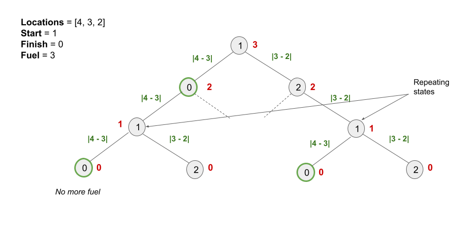

We are given an array of distinct positive integer locations where locations[i] represents the position
of city i. We are also given integers start, finish, and fuel
representing the starting city, ending city, and the initial amount of fuel you have, respectively.
At each step, if you are at city i, you can pick any city j such that j != i
and move to city j. Moving from city i to city j consumes |locations[i]
- locations[j]| fuel.
Our task is to count the number of possible routes from start to finish without the fuel dropping below
0. Since the answer may be too large, we have to modulo it by 109+710^9 + 7.
If you are new to Dynamic Programming, please see our Leetcode Explore Card for more information on it!
Intuitively, we can consider moving to any city that we have enough fuel to reach. We repeat the process from the
city we arrive in with the remaining fuel and travel to all cities we can with the remaining fuel. We keep repeating
this process until we run out of fuel increment the answer by 1 each time we arrive at the
finish city.
Note that we don't necessarily stop at the finish city, since we might be able to leave the city and
return if we have enough fuel, creating more routes.
We can implement this approach using a recursion to keep moving from the current city to all the other cities with the remaining fuel.
Let the current city be currCity and the remaining fuel be remainingFuel. We initialize an
answer variable to store the number of routes to reach finish from currCity.
If currCity == finish, we have one way to reach finish, so we initialize answer =
1. Otherwise, answer = 0 is initialized.
We recursively move from currCity to all the other cities. For each nextCity (not equal to
currCity), we again call the recursive function with nextCity as currCity and
the remainingFuel as remainingFuel - |locations[currCity] - locations[nextCity]|. If
remainingFuel drops below 0, we simply return 0 and don't do anything in the
recursive function. The recursive relation can be written as:
answer = currCity == finish ? 1 : 0
answer = (answer + solve(locations, nextCity, finish, remainingFuel - |locations[currCity] - locations[nextCity]|)) % 1000000007
Considering all values ofnextCity, wherenextCity != currCity.
Our answer would be solve(locations, start, finish, fuel).
The recursion tree of the above relation would look something like this:

The number in the node represents the city, the numbers in red alongside each node represent the remaining fuel, and the calculation on each edge represents the amount of fuel required to move from one city to another. We can see that there are subproblems as indicated in the image that are solved multiple times in the partial recursion tree shown above. If we draw the entire recursion tree, we can see that there are many subproblems that are solved repeatedly.
To avoid this issue, we store the solution of each sub-problem and when we encounter the same subproblem again, we simply refer to the stored result. This is called memoization.
As we know the current state of a sub-problem depends on the current city and the remaining fuel, we can use a 2D array here.
n and initialize it to the size of locations.memo having n rows and fuel + 1 columns where
memo[i][j] contains the number of possible routes starting from the city i with j
fuel. We initialize the array to -1.
solve(locations, start, finish, fuel, memo) where solve is a recursive method
with five parameters: locations, the curent city currCity we are at,
finish, remainingFuel, and memo. It returns the number of possible routes
starting from the currCity city with remainingFuel fuel. We perform the following in
this method:
remainingFuel < 0, it indicates we cannot enter this city as the fuel is negative, so
we return 0.
memo[m][n] != -1, it indicates that we have already solved this subproblem, so we return
memo[m][n].
ans. We initialize it to 1 if currCity ==
finish, else to 0.
nextCity != currCity, we recursively
compute the number of possible routes that lead to finish with remainingFuel -
|locations[currCity] - locations[nextCity]| fuel. We perform ans = ans +
solve(locations, nextCity, finish, remainingFuel - |locations[currCity] - locations[nextCity]|,
memo) for all the cities. We also take its modulo with 109+710^9 + 7
at each step.
long long variables in languages like C++ and Java
because our computations never exceed Integer limit. At the most, ans and
solve can be 109+610^9 + 6
each (one less than 109+710^9 + 7).
Adding both of these values in the above step ((109+6)+(109+6)=2⋅109+1210^9 + 6) + (10^9 + 6) = 2 \cdot 10 ^9 + 12)
would still not exceed the Integer limits, after which we modulo them with 109+710^9 + 7
anyways.
memo[currCity][remainingFuel] and return it.
Java
class Solution {
public int solve(int[] locations, int currCity, int finish, int remainingFuel, int memo[][]) {
if (remainingFuel < 0) {
return 0;
}
if (memo[currCity][remainingFuel] != -1) {
return memo[currCity][remainingFuel];
}
int ans = currCity == finish ? 1 : 0;
for (int nextCity = 0; nextCity < locations.length; nextCity++) {
if (nextCity != currCity) {
ans = (ans + solve(locations, nextCity, finish,
remainingFuel - Math.abs(locations[currCity] - locations[nextCity]),
memo)) % 1000000007;
}
}
return memo[currCity][remainingFuel] = ans;
}
public int countRoutes(int[] locations, int start, int finish, int fuel) {
int n = locations.length;
int memo[][] = new int[n][fuel + 1];
for (int i = 0; i < n; ++i) {
Arrays.fill(memo[i], -1);
}
return solve(locations, start, finish, fuel, memo);
}
}
C++
class Solution {
public:
int solve(vector& locations, int currCity, int finish, int remainingFuel,
vector>& memo) {
if (remainingFuel < 0) {
return 0;
}
if (memo[currCity][remainingFuel] != -1) {
return memo[currCity][remainingFuel];
}
int ans = currCity == finish ? 1 : 0;
for (int nextCity = 0; nextCity < locations.size(); nextCity++) {
if (nextCity != currCity) {
ans = (ans + solve(locations, nextCity, finish,
remainingFuel - abs(locations[currCity] - locations[nextCity]),
memo)) % 1000000007;
}
}
return memo[currCity][remainingFuel] = ans;
}
int countRoutes(vector& locations, int start, int finish, int fuel) {
int n = locations.size();
vector> memo(n, vector(fuel + 1, -1));
return solve(locations, start, finish, fuel, memo);
}
};
Python3
class Solution:
def countRoutes(self, locations: List[int], start: int, finish: int, fuel: int) -> int:
n = len(locations)
memo = {}
def solve(currCity, remainingFuel):
if remainingFuel < 0:
return 0
if (currCity, remainingFuel) in memo:
return memo[(currCity, remainingFuel)]
ans = 0
if currCity == finish:
ans = 1
for nextCity in range(n):
if nextCity != currCity:
ans = (ans + solve(nextCity, remainingFuel - abs(
locations[currCity] - locations[nextCity]))) % 1000000007
memo[(currCity, remainingFuel)] = ans
return ans
return solve(start, fuel)
Here, nn
is the length of locations.
Time complexity: O(n2⋅fuel)O(n^2 \cdot \text{fuel})
memo array takes O(n⋅fuel)O(n \cdot \text{fuel}) time.
currCity, remainingFuel state. Because there are n⋅fueln \cdot \text{fuel} states and computing each state requires
iterating over all the n cities (except the current one), it would take O(n2⋅fuel)O(n^2 \cdot \text{fuel}) time.
Space complexity: O(n⋅fuel)O(n \cdot \text{fuel})
memo array consumes O(n⋅fuel)O(n \cdot \text{fuel}) space.
n - 1 branches are formed (visiting all cities except the current
city). The recursion stack would only have one call out of the n - 1 branches. The height
of such a tree will be O(fuel)O(\text{fuel}) in the worst case if we consider
decrementing the remaining fuel by 1 when going from a city to another. As a result, the
recursion tree that will be formed will have O(fuel)O(\text{fuel}) height. Hence, the recursion stack will have
a maximum of O(fuel)O(\text{fuel}) elements.
We used memoization in the preceding approach to store the answers to subproblems in order to solve a larger problem. We can also use a bottom-up approach to solve such problems without using recursion. We build answers to subproblems iteratively first, then use them to build answers to larger problems.
In the approach also we create a 2D-array dp, where dp[i][j] contains the number of
possible routes starting from the city i with j fuel. Our answer would be dp[start][fuel].
The value of dp[i][j] would be initialized with 1 if i == finish (staying at
i is one way to reach finish), otherwise 0 as we did in the previous
approach. We then move to all other cities except i. For each city k, we reduce the fuel
by |locations[i] - locations[k]| and add the ways to reach finish from k
using j - |locations[i] - locations[k]| to dp[i][j]. The state transition would be as
follows:
dp[i][j] = (dp[i][j] + dp[k][j - |locations[i] - locations[k]|]) % 1000000007
The transition indicates that three nested loops are required to fill the dp array. The first loop
controls the fuel and will go from j = 0 to fuel, the second loop controls the start city
and runs from i = 0 to n - 1, and the third loops from k = 0 to n -
1 to cover all the cities we move to from the city i. To compute dp[i][j], we
must know the values for fuel less than j because we are decrementing the fuel in its computation while
moving to other cities. As a result, the outer loop must control the fuel as we progress from a lower amount of fuel
to a higher amount of fuel in a bottom-up manner.
n and initialize it to the size of locations.dp having n rows and fuel + 1 columns where
memo[i][j] contains the number of possible routes starting from the city i with j
fuel. We initialize the values in the row finish to 1 because just standing at the
city is one way to reach finish. It forms the base case for our approach.
j = 0 to
fuel, the second loop controls the start city and runs from i = 0 to n -
1, and the third loops from k = 0 to n - 1 to cover all the cities we move
to from the city i. We perform the following:
k == i, we ignore this case and just continue as we cannot move to the same city in the
next step.
i to k, i.e., |locations[i] -
locations[k]| <= j, we add dp[k][j - |locations[i] - locations[k]|] to dp[i][j]
and take it modulo with 109+710^9 + 7.
dp[start][fuel].
Java
class Solution {
public int countRoutes(int[] locations, int start, int finish, int fuel) {
int n = locations.length;
int dp[][] = new int[n][fuel + 1];
Arrays.fill(dp[finish], 1);
int ans = 0;
for (int j = 0; j <= fuel; j++) {
for (int i = 0; i < n; i++) {
for (int k = 0; k < n; k++) {
if (k == i) {
continue;
}
if (Math.abs(locations[i] - locations[k]) <= j) {
dp[i][j] = (dp[i][j] + dp[k][j - Math.abs(locations[i] - locations[k])]) %
1000000007;
}
}
}
}
return dp[start][fuel];
}
}
C++
class Solution {
public:
int countRoutes(vector& locations, int start, int finish, int fuel) {
int n = locations.size();
vector> dp(n, vector(fuel + 1));
for(int i = 0; i<=fuel; i++) {
dp[finish][i] = 1;
}
int ans = 0;
for (int j = 0; j <= fuel; j++) {
for (int i = 0; i < n; i++) {
for (int k = 0; k < n; k++) {
if (k == i) {
continue;
}
if (abs(locations[i] - locations[k]) <= j) {
dp[i][j] = (dp[i][j] + dp[k][j - abs(locations[i] - locations[k])]) %
1000000007;
}
}
}
}
return dp[start][fuel];
}
};
Python3
class Solution:
def countRoutes(self, locations: List[int], start: int, finish: int, fuel: int) -> int:
n = len(locations)
dp = [[0] * (fuel + 1) for _ in range(n)]
for i in range(fuel + 1):
dp[finish][i] = 1
for j in range(fuel + 1):
for i in range(n):
for k in range(n):
if k == i:
continue
if abs(locations[i] - locations[k]) <= j:
dp[i][j] = (dp[i][j] + dp[k][j - abs(
locations[i] - locations[k])]) % 1000000007
return dp[start][fuel]
Here, nn
is the length of locations.
Time complexity: O(n2⋅fuel)O(n^2 \cdot \text{fuel})
dp array takes O(n⋅fuel)O(n \cdot \text{fuel}) time.
dp array which takes O(n2⋅fuel)O(n^2 \cdot \text{fuel}) as we run three nested loops.
Space complexity: O(n⋅fuel)O(n \cdot \text{fuel})
dp array consumes O(n⋅fuel)O(n \cdot \text{fuel}) space.